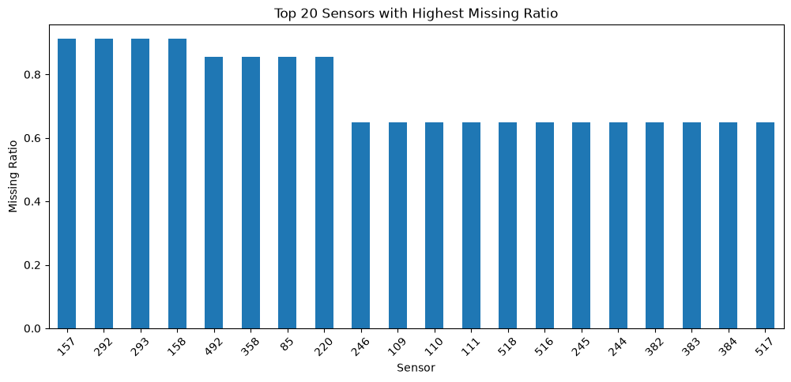
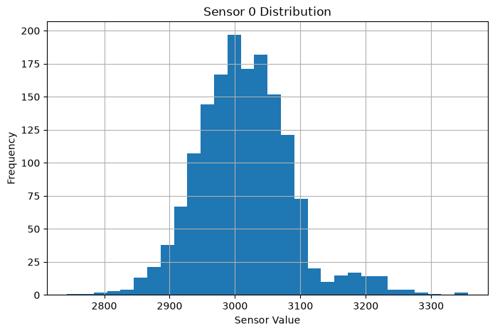
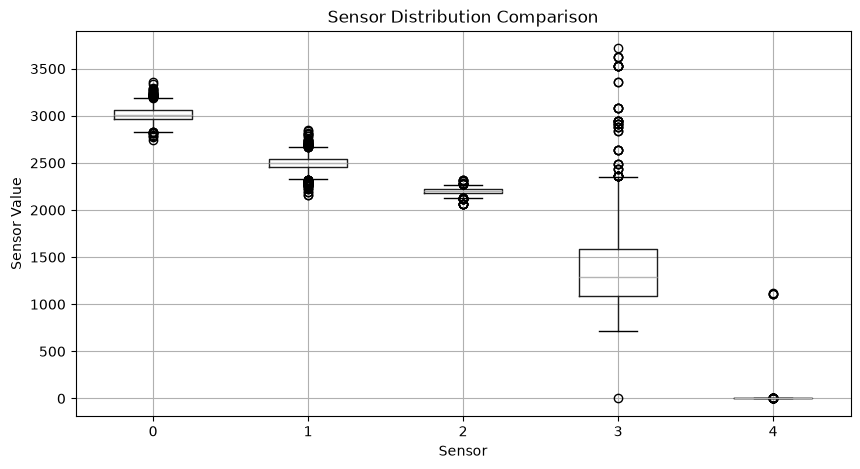
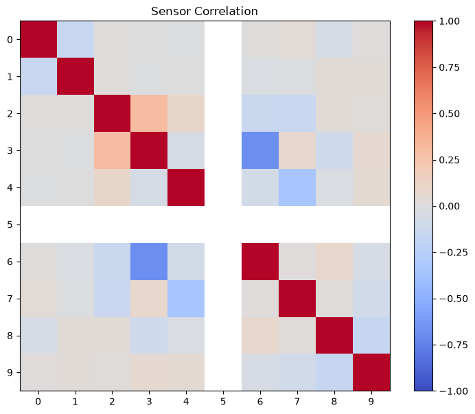
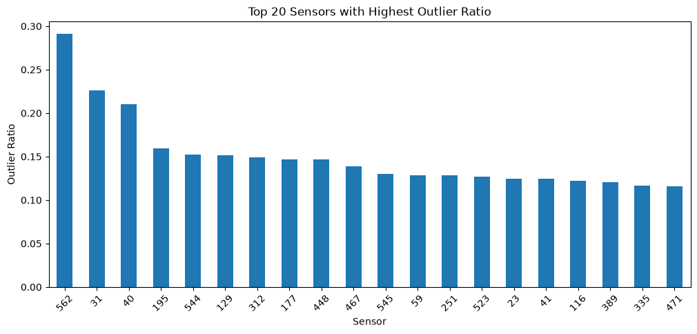
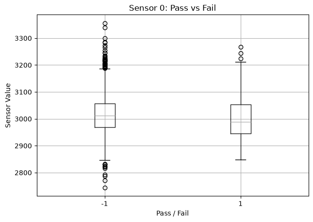

Top 20 Sensors with Highest Missing Ratio

결과 해석 · 공정 관점
결측치 비율이 높은 센서를 먼저 확인한 뒤, 노트북에서는 결측률 40% 초과 센서를 제거했습니다. 계측 가능 상태와 데이터 수집 이력은 공정 분석 전에 점검할 대상입니다.
반도체 공정 데이터를 불러오고 데이터 구조를 확인한 뒤, 공정 변수의 분포와 결측치, 변수 간 관계를 탐색하는 기초 공정 데이터 분석 프로젝트입니다.
반도체 제조 데이터는 수백 개의 센서 및 공정 변수를 포함할 수 있기 때문에 모델링 이전에 데이터 구조와 품질을 먼저 파악하는 과정이 중요합니다.
UCI SECOM 반도체 제조 데이터를 사용했습니다. 데이터에는 공정 측정값과 시간 정보가 포함되어 있으며, 다수의 센서 컬럼에서 결측값이 존재합니다.
데이터 로드 결과 총 1,567개 행과 592개 컬럼으로 구성된 고차원 반도체 공정 데이터임을 확인했습니다.
하나의 웨이퍼 또는 공정 샘플에 대해 수백 개의 센서값이 기록되어 있어, 분석 전에 불필요한 변수 제거와 결측치 처리가 필요합니다.
일부 공정 센서 컬럼에 결측값이 존재하므로 결측 비율이 높은 변수를 제거하거나, 중앙값과 같은 대표값을 활용한 보정이 필요합니다.
SECOM 데이터에는 일반적인 공정 분석 예제에서 사용하는 TOOL_ID, CD_MEAN과 같은 설비·계측 컬럼이 직접 존재하지 않았습니다. 따라서 실제 데이터의 컬럼 구조에 맞춰 분석 로직을 변경해야 한다는 점을 확인했습니다.
반도체 데이터 분석에서는 분석 기법 자체보다 먼저 실제 데이터의 컬럼 정의와 데이터 생성 맥락을 확인하는 것이 중요합니다.
이러한 데이터 이해 과정은 이후 이상 탐지, 공정 조건 비교, 수율 예측 모델의 신뢰성을 높이는 기반이 됩니다.
실제 데이터 로딩 및 분석 과정은 GitHub의 Jupyter Notebook에서 확인할 수 있습니다.
View Notebook on GitHub →아래 그래프는 해당 Python 노트북에서 실제 실행되어 저장된 출력입니다.

결과 해석 · 공정 관점
결측치 비율이 높은 센서를 먼저 확인한 뒤, 노트북에서는 결측률 40% 초과 센서를 제거했습니다. 계측 가능 상태와 데이터 수집 이력은 공정 분석 전에 점검할 대상입니다.

결과 해석 · 공정 관점
개별 센서의 측정값 분포를 확인한 결과입니다. 분포의 중심과 폭을 함께 보면 공정 조건 변화 또는 계측 이상 가능성을 탐색할 수 있습니다.

결과 해석 · 공정 관점
여러 센서의 스케일과 산포를 비교한 결과입니다. 서로 다른 물리량의 신호를 함께 모델링할 때는 변수별 범위 차이를 고려해야 합니다.

결과 해석 · 공정 관점
선택 센서 간 상관관계를 시각화한 결과입니다. 높은 상관은 공통 공정 조건 또는 중복된 신호를 뜻할 수 있어, 변수 해석과 선택의 출발점이 됩니다.

결과 해석 · 공정 관점
이상값 비율이 높은 센서를 분리해 확인했습니다. 현업에서는 해당 시점의 장비 상태와 Lot 이력을 함께 대조해 원인을 좁힐 수 있습니다.

결과 해석 · 공정 관점
정상과 불량 레이블별 센서 분포를 비교한 결과입니다. 두 집단의 분포 차이는 불량 예측에 활용 가능한 후보 신호를 찾는 단서가 됩니다.